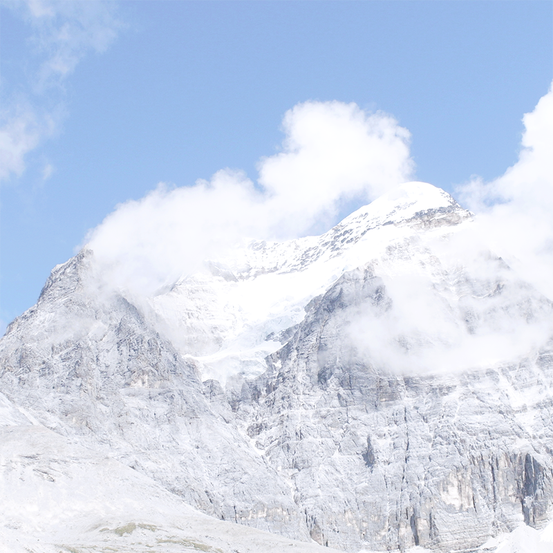

Mountain
A mountain is a large landform stretching above the surrounding land in a limited area, usually in the form of a peak. A mountain is generally steeper than a hill. Mountains are formed through volcanism or tectonic forces, which can locally raise the surface of the earth.

Mountains erode slowly through the action of rivers, glaciers, and weather conditions. Some are isolated summits, but most occur in huge mountain ranges.
